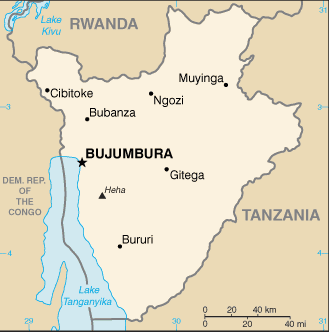
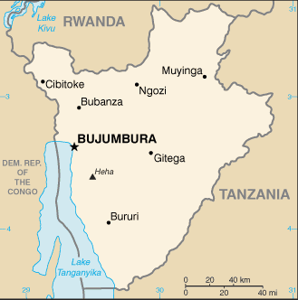

Africa :: BURUNDI
Introduction :: BURUNDI
-
Burundi is a small country in East Africa bordered by Tanzania, Rwanda, and Lake Tanganyika. Burundi gained its independence from Belgium in 1962. Much of its history has been turbulent, and Burundi's first democratically elected president was assassinated in October 1993 after only 100 days in office. The internationally brokered Arusha Agreement ended the 1993-2005 civil war, paving the way for a new constitution and 2005 elections. Pierre NKURUNZIZA was elected president in 2005 and 2010 and again in a controversial election in 2015. Burundi continues to face many political and economic challenges.
Geography :: BURUNDI
-
Central Africa, east of the Democratic Republic of the Congo, west of Tanzania3 30 S, 30 00 EAfricatotal: 27,830 sq kmland: 25,680 sq kmwater: 2,150 sq kmcountry comparison to the world: 147slightly smaller than Marylandtotal: 1,140 kmborder countries (3): Democratic Republic of the Congo 236 km, Rwanda 315 km, Tanzania 589 km0 km (landlocked)none (landlocked)equatorial; high plateau with considerable altitude variation (772 m to 2,670 m above sea level); average annual temperature varies with altitude from 23 to 17 degrees Celsius but is generally moderate as the average altitude is about 1,700 m; average annual rainfall is about 150 cm; two wet seasons (February to May and September to November), and two dry seasons (June to August and December to January)hilly and mountainous, dropping to a plateau in east, some plainsmean elevation: 1,504 melevation extremes: lowest point: Lake Tanganyika 772 mhighest point: Heha 2,670 mnickel, uranium, rare earth oxides, peat, cobalt, copper, platinum, vanadium, arable land, hydropower, niobium, tantalum, gold, tin, tungsten, kaolin, limestoneagricultural land: 73.3%arable land 38.9%; permanent crops 15.6%; permanent pasture 18.8%forest: 6.6%other: 20.1% (2011 est.)230 sq km (2012)one of Africa's most densely populated countries; concentrations tend to be in the north and along the northern shore of Lake Tanganyika in the west; most people live on farms near areas of fertile volcanic soilflooding; landslides; droughtsoil erosion as a result of overgrazing and the expansion of agriculture into marginal lands; deforestation (little forested land remains because of uncontrolled cutting of trees for fuel); habitat loss threatens wildlife populationsparty to: Biodiversity, Climate Change, Climate Change-Kyoto Protocol, Desertification, Endangered Species, Hazardous Wastes, Ozone Layer Protection, Wetlandssigned, but not ratified: Law of the Sealandlocked; straddles crest of the Nile-Congo watershed; the Kagera, which drains into Lake Victoria, is the most remote headstream of the White Nile
People and Society :: BURUNDI
-
11,466,756note: estimates for this country explicitly take into account the effects of excess mortality due to AIDS; this can result in lower life expectancy, higher infant mortality, higher death rates, lower population growth rates, and changes in the distribution of population by age and sex than would otherwise be expected (July 2017 est.)country comparison to the world: 78noun: Burundian(s)adjective: BurundianHutu (Bantu) 85%, Tutsi (Hamitic) 14%, Twa (Pygmy) 1%, Europeans 3,000, South Asians 2,000Kirundi 29.7% (official), Kirundi and other language 9.1%, French (official) and French and other language 0.3%, Swahili and Swahili and other language 0.2% (along Lake Tanganyika and in the Bujumbura area), English (official) and English and other language 0.06%, more than 2 languages 3.7%, unspecified 56.9%note: data represent language read and written by people 10 years of age or older; spoken Kirundi is widespread (2008 est.)Roman Catholic 62.1%, Protestant 23.9% (includes Adventist 2.3% and other Protestant 21.6%), Muslim 2.5%, other 3.6%, unspecified 7.9% (2008 est.)Burundi is a densely populated country with a high population growth rate, factors that combined with land scarcity and poverty place a large share of its population at risk of food insecurity. About 90% of the population relies on subsistence agriculture. Subdivision of land to sons, and redistribution to returning refugees, results in smaller, overworked, and less productive plots. Food shortages, poverty, and a lack of clean water contribute to a 60% chronic malnutrition rate among children. A lack of reproductive health services has prevented a significant reduction in Burundi’s maternal mortality and fertility rates, which are both among the world’s highest. With two-thirds of its population under the age of 25 and a birth rate of about 6 children per woman, Burundi’s population will continue to expand rapidly for decades to come, putting additional strain on a poor country.Historically, migration flows into and out of Burundi have consisted overwhelmingly of refugees from violent conflicts. In the last decade, more than a half million Burundian refugees returned home from neighboring countries, mainly Tanzania. Reintegrating the returnees has been problematic due to their prolonged time in exile, land scarcity, poor infrastructure, poverty, and unemployment. Repatriates and existing residents (including internally displaced persons) compete for limited land and other resources. To further complicate matters, international aid organizations reduced their assistance because they no longer classified Burundi as a post-conflict country. Conditions have deteriorated since renewed violence erupted in April 2015, causing another outpouring of refugees. In addition to refugee out-migration, Burundi has hosted thousands of refugees from neighboring countries, mostly from the Democratic Republic of the Congo and lesser numbers from Rwanda.0-14 years: 45.57% (male 2,628,767/female 2,596,719)15-24 years: 19.15% (male 1,095,213/female 1,100,314)25-54 years: 28.74% (male 1,643,319/female 1,651,679)55-64 years: 3.92% (male 212,074/female 237,324)65 years and over: 2.63% (male 129,482/female 171,865) (2017 est.)total dependency ratio: 89.6youth dependency ratio: 84.8elderly dependency ratio: 4.7potential support ratio: 21.1 (2015 est.)total: 17 yearsmale: 16.8 yearsfemale: 17.3 years (2017 est.)country comparison to the world: 2233.25% (2017 est.)country comparison to the world: 441.3 births/1,000 population (2017 est.)country comparison to the world: 68.8 deaths/1,000 population (2017 est.)country comparison to the world: 690 migrant(s)/1,000 population (2017 est.)country comparison to the world: 77one of Africa's most densely populated countries; concentrations tend to be in the north and along the northern shore of Lake Tanganyika in the west; most people live on farms near areas of fertile volcanic soilurban population: 12.7% of total population (2017)rate of urbanization: 5.48% annual rate of change (2015-20 est.)BUJUMBURA (capital) 751,000 (2015)at birth: 1.03 male(s)/female0-14 years: 1.01 male(s)/female15-24 years: 1 male(s)/female25-54 years: 1 male(s)/female55-64 years: 0.89 male(s)/female65 years and over: 0.74 male(s)/femaletotal population: 0.99 male(s)/female (2016 est.)21.3 yearsnote: median age at first birth among women 25-29 (2010 est.)712 deaths/100,000 live births (2015 est.)country comparison to the world: 8total: 58.8 deaths/1,000 live birthsmale: 65.3 deaths/1,000 live birthsfemale: 52.2 deaths/1,000 live births (2017 est.)country comparison to the world: 19total population: 60.9 yearsmale: 59.2 yearsfemale: 62.7 years (2017 est.)country comparison to the world: 2025.99 children born/woman (2017 est.)country comparison to the world: 431.7% (2012)7.5% of GDP (2014)country comparison to the world: 631.9 beds/1,000 population (2011)improved:urban: 91.1% of populationrural: 73.8% of populationtotal: 75.9% of populationunimproved:urban: 8.9% of populationrural: 26.2% of populationtotal: 24.1% of population (2015 est.)improved:urban: 43.8% of populationrural: 48.6% of populationtotal: 48% of populationunimproved:urban: 56.2% of populationrural: 51.4% of populationtotal: 52% of population (2015 est.)1.1% (2016 est.)country comparison to the world: 4284,000 (2016 est.)country comparison to the world: 462,900 (2016 est.)country comparison to the world: 42degree of risk: very highfood or waterborne diseases: bacterial and protozoal diarrhea, hepatitis A, and typhoid fevervectorborne diseases: malaria and dengue feverwater contact disease: schistosomiasisanimal contact disease: rabies (2016)5.4% (2016)country comparison to the world: 17829.1% (2010)country comparison to the world: 165.4% of GDP (2013)country comparison to the world: 50definition: age 15 and over can read and writetotal population: 85.6%male: 88.2%female: 83.1% (2015 est.)total: 11 yearsmale: 11 yearsfemale: 10 years (2013)
Government :: BURUNDI
-
conventional long form: Republic of Burundiconventional short form: Burundilocal long form: Republique du Burundi/Republika y'u Burundilocal short form: Burundiformer: Urundietymology: name derived from the pre-colonial Kingdom of Burundi (17th-19th century)presidential republicname: Bujumburageographic coordinates: 3 22 S, 29 21 Etime difference: UTC+2 (7 hours ahead of Washington, DC, during Standard Time)18 provinces; Bubanza, Bujumbura Mairie, Bujumbura Rural, Bururi, Cankuzo, Cibitoke, Gitega, Karuzi, Kayanza, Kirundo, Makamba, Muramvya, Muyinga, Mwaro, Ngozi, Rumonge, Rutana, Ruyigi1 July 1962 (from UN trusteeship under Belgian administration)Independence Day, 1 July (1962)history: several previous; latest ratified by referendum 28 February 2005amendments: proposed by the president of the republic after consultation with the government or by absolute majority support of the membership in both houses of Parliament; passage requires at least two-thirds majority vote by the Senate membership and at least four-fifths majority vote by the National Assembly; the president can opt to submit amendment bills to a referendum; constitutional articles including those on national unity, the secularity of Burundi, its democratic form of government, and its sovereignty cannot be amended (2017)mixed legal system of Belgian civil law and customary lawhas not submitted an ICJ jurisdiction declaration; accepts ICCt jurisdictioncitizenship by birth: nocitizenship by descent only: the father must be a citizen of Burundidual citizenship recognized: noresidency requirement for naturalization: 10 years18 years of age; universalchief of state: President Pierre NKURUNZIZA (since 26 August 2005); First Vice President Gaston SINDIMWO (since 20 August 2015); Second Vice President Joseph BUTORE (since 20 August 2015); note - the president is both chief of state and head of governmenthead of government: President Pierre NKURUNZIZA (since 26 August 2005); First Vice President Gaston SINDIMWO (since 20 August 2015); Second Vice President Joseph BUTORE (since 20 August 2015)cabinet: Council of Ministers appointed by presidentelections/appointments: president directly elected by absolute majority popular vote in 2 rounds if needed for a 5-year term (eligible for a second term); election last held on 21 July 2015(next to be held in 2020); vice presidents nominated by the president, endorsed by Parliamentelection results: Pierre NKURUNZIZA reelected president; percent of vote - Pierre NKURUNZIZA (CNDD-FDD) 69.4%, Agathon RWASA (Independents of Hope) 19%, other 11.6%description: bicameral Parliament or Parlement consists of the Senate or Inama Nkenguzamateka (43 seats in the July 2015 election; 36 members indirectly elected by an electoral college of provincial councils using a three-round voting system, which requires a two-thirds majority vote in the first two rounds and a simple majority vote for the two leading candidates in the final round; 4 seats reserved for former heads of state, 3 seats reserved for Twas, and 8 seats for women; members serve 5-year terms) and the National Assembly or Inama Nshingamateka (121 seats in the June 2015 election; 100 members directly elected in multi-seat constituencies by proportional representation vote and 21 co-opted members – 3 Twas and 18 women; members serve 5-year terms)elections: Senate - last held on 24 July 2015 (next to be held in 2019); National Assembly - last held on 29 June 2015 (next to be held in 2020)election results: Senate - percent of vote by party - NA; seats by party - CNDD-FDD 33, FRODEBU 2, CNDD 1, former heads of state 4, Twas 3, women 8; National Assembly - percent of vote by party (provisional results) - CNDD-FDD 60.3%, Independents of Hope 11.2%, UPRONA 2.5%, other 26%; seats by party - CNDD-FDD 77, Independents of Hope 21, UPRONA 2, women 18, Twas 3highest court(s): Supreme Court (consists of 9 judges and organized into judicial, administrative, and cassation chambers); Constitutional Court (consists of 7 members)judge selection and term of office: Supreme Court judges nominated by the Judicial Service Commission, a 15-member independent body of judicial and legal profession officials), appointed by the president and confirmed by the Senate; judge tenure NA; Constitutional Court judges appointed by the president and confirmed by the Senate and serve 6-year nonrenewable termssubordinate courts: Courts of Appeal; County Courts; Courts of Residence; Martial Court; Court Against Corruption; Commercial CourtFront for Democracy in Burundi or FRODEBU [Keffa NIBIZI]Independents of Hope [Agathon RWASA and Charles NDITIJE]Movement for Solidarity and Development or MSD [Alexis SINDUHUE]National Council for the Defense of Democracy - Front for the Defense of Democracy or CNDD-FDD [Evariste NDAYISHIMIYE]National Liberation Forces or FNL [Jacques BIGITIMANA]Union for National Progress (Union pour le Progress Nationale) or UPRONA [Pierre BUYOAY]Forum for the Strengthening of Civil Society or FORSC (civil society umbrella organization) [Vital NSHMIRIMANA]ACP, AfDB, AU, CEMAC, CEPGL, CICA, COMESA, EAC, FAO, G-77, IBRD, ICAO, ICCt, ICRM, IDA, IFAD, IFC, IFRCS, ILO, IMF, Interpol, IOC, IOM, IPU, ISO (correspondent), ITU, ITUC (NGOs), MIGA, NAM, OIF, OPCW, UN, UNAMID, UNCTAD, UNESCO, UNIDO, UNISFA, UNWTO, UPU, WCO, WHO, WIPO, WMO, WTOchief of mission: Ambassador Ernest NDABASHINZE (since 21 May 2014)chancery: 2233 Wisconsin Avenue NW, Suite 408, Washington, DC 20007telephone: [1] (202) 342-2574FAX: [1] (202) 342-2578chief of mission: Ambassador Anne S. CASPER (since 20 October 2016)embassy: Avenue Des Etats-Unis, Bujumburamailing address: B.P. 1720, Bujumburatelephone: [257] 22-207-000FAX: [257] 22-222-926divided by a white diagonal cross into red panels (top and bottom) and green panels (hoist side and fly side) with a white disk superimposed at the center bearing three red six-pointed stars outlined in green arranged in a triangular design (one star above, two stars below); green symbolizes hope and optimism, white purity and peace, and red the blood shed in the struggle for independence; the three stars in the disk represent the three major ethnic groups: Hutu, Twa, Tutsi, as well as the three elements in the national motto: unity, work, progresslion; national colors: red, white, greenname: "Burundi Bwacu" (Our Beloved Burundi)lyrics/music: Jean-Baptiste NTAHOKAJA/Marc BARENGAYABOnote: adopted 1962
Economy :: BURUNDI
-
Burundi is a landlocked, resource-poor country with an underdeveloped manufacturing sector. Agriculture accounts for over 40% of GDP and employs more than 90% of the population. Burundi's primary exports are coffee and tea, which account for more than 60% of foreign exchange earnings. Thus, Burundi's export earnings - and its ability to pay for imports - rest primarily on favorable weather conditions and international coffee and tea prices, although exports are a relatively small share of GDP. Burundi is heavily dependent on aid from bilateral and multilateral donors. Foreign aid represented 48% of Burundi's national income in 2015, one of the highest percentages in Sub-Saharan Africa, but decreased to 33.5% in 2016. Burundi joined the East African Community (EAC) in 2009.The 1993-2005 civil war resulted in more than 200,000 deaths, forced more than 48,000 refugees into Tanzania, and displaced 140,000 others internally. Political stability, aid flows, and economic activity improved following the war’s end, but underlying weaknesses – low governmental capacity, a high poverty rate, poor educational levels, a weak legal system, a poor transportation network, and overburdened utilities – have prevented the implementation of planned economic reforms. Government corruption has also hindered the development of a private sector. The purchasing power of most Burundians has decreased as wage increases have not kept pace with inflation.In 2015, Burundi’s economy suffered from political turmoil, including street protests and an attempted coup, following President NKURUNZIZA’s controversial announcement that he would run for a third term. Insecurity and refugee flows to neighboring countries slowed down economic activity and donors withdrew aid, increasing Burundi’s budget deficit and decreasing hard currency reserves. Real GDP growth dropped precipitously and has yet to recover to pre-conflict levels.$7.849 billion (2016 est.)$7.831 billion (2015 est.)$8.066 billion (2014 est.)note: data are in 2016 dollarscountry comparison to the world: 163$3.138 billion (2016 est.)-1% (2016 est.)-4% (2015 est.)4.5% (2014 est.)country comparison to the world: 196$800 (2016 est.)$800 (2015 est.)$900 (2014 est.)note: data are in 2016 dollarscountry comparison to the world: 227-4.1% of GDP (2016 est.)-6.7% of GDP (2015 est.)-3.4% of GDP (2014 est.)country comparison to the world: 170household consumption: 87.3%government consumption: 21.5%investment in fixed capital: 16.9%investment in inventories: 0%exports of goods and services: 6.2%imports of goods and services: -31.9% (2016 est.)agriculture: 39.8%industry: 16.6%services: 43.7% (2016 est.)coffee, cotton, tea, corn, beans, sorghum, sweet potatoes, bananas, cassava (manioc, tapioca); beef, milk, hideslight consumer goods (sugar, shoes, soap, beer); cement, assembly of imported components; public works construction; food processing (fruits)-7.1% (2016 est.)country comparison to the world: 1934.842 million (2016 est.)country comparison to the world: 84agriculture: 93.6%industry: 2.3%services: 4.1% (2002 est.)NA%64.6% (2014 est.)lowest 10%: 4.1%highest 10%: 28% (2006)42.4 (1998)country comparison to the world: 50revenues: $528.4 millionexpenditures: $669.6 million (2016 est.)16.9% of GDP (2016 est.)country comparison to the world: 175-4.5% of GDP (2016 est.)country comparison to the world: 14743.4% of GDP (2016 est.)39.6% of GDP (2015 est.)country comparison to the world: 121calendar year5.5% (2016 est.)5.5% (2015 est.)country comparison to the world: 17711.25% (31 December 2010)10% (31 December 2009)country comparison to the world: 1714.24% (31 December 2016 est.)15.33% (31 December 2015 est.)country comparison to the world: 49$456.3 million (31 December 2016 est.)$397.7 million (31 December 2015 est.)country comparison to the world: 169$612.8 million (31 December 2016 est.)$571.2 million (31 December 2015 est.)country comparison to the world: 181$955.1 million (31 December 2016 est.)$851.3 million (31 December 2015 est.)country comparison to the world: 167$NA$-411 million (2016 est.)$-374.7 million (2015 est.)country comparison to the world: 95$109.7 million (2016 est.)$120.8 million (2015 est.)country comparison to the world: 194coffee, tea, sugar, cotton, hidesDemocratic Republic of the Congo 30.6%, UAE 15.7%, Kenya 14.5%, Rwanda 7.2% (2016)$509.4 million (2016 est.)$595.9 million (2015 est.)country comparison to the world: 192capital goods, petroleum products, foodstuffsChina 13.3%, India 13%, Tanzania 8.6%, Saudi Arabia 7.9%, Kenya 7.5%, UAE 5.2%, Uganda 5% (2016)$95.17 million (31 December 2016 est.)$136.2 million (31 December 2015 est.)country comparison to the world: 165$622.4 million (31 December 2016 est.)$626 million (31 December 2015 est.)country comparison to the world: 175Burundi francs (BIF) per US dollar -1,654.63 (2016 est.)1,654.63 (2015 est.)1,571.9 (2014 est.)1,546.7 (2013 est.)1,442.51 (2012 est.)
Energy :: BURUNDI
-
population without electricity: 9,700,000electrification - total population: 5%electrification - urban areas: 28%electrification - rural areas: 2% (2013)230 million kWh (2015 est.)country comparison to the world: 185303.9 million kWh (2015 est.)country comparison to the world: 1840 kWh (2016 est.)country comparison to the world: 11490 million kWh (2015 est.)country comparison to the world: 9868,000 kW (2015 est.)country comparison to the world: 18713.2% of total installed capacity (2015 est.)country comparison to the world: 2000% of total installed capacity (2015 est.)country comparison to the world: 6083.8% of total installed capacity (2015 est.)country comparison to the world: 134.4% of total installed capacity (2015 est.)country comparison to the world: 1010 bbl/day (2016 est.)country comparison to the world: 1160 bbl/day (2014 est.)country comparison to the world: 1020 bbl/day (2014 est.)country comparison to the world: 1050 bbl (1 January 2017 es)country comparison to the world: 1150 bbl/day (2014 est.)country comparison to the world: 1241,500 bbl/day (2015 est.)country comparison to the world: 1990 bbl/day (2014 est.)country comparison to the world: 1381,636 bbl/day (2014 est.)country comparison to the world: 1920 cu m (2013 est.)country comparison to the world: 1150 cu m (2013 est.)country comparison to the world: 1630 cu m (2013 est.)country comparison to the world: 770 cu m (2013 est.)country comparison to the world: 1000 cu m (1 January 2014 es)country comparison to the world: 121300,000 Mt (2013 est.)country comparison to the world: 193
Communications :: BURUNDI
-
total subscriptions: 19,540subscriptions per 100 inhabitants: less than 1 (July 2016 est.)country comparison to the world: 182total: 5,357,816subscriptions per 100 inhabitants: 48 (July 2016 est.)country comparison to the world: 138general assessment: sparse system of open-wire, radiotelephone communications, and low-capacity microwave radio relaysdomestic: telephone density one of the lowest in the world; fixed-line connections stand at well less than 1 per 100 persons; mobile-cellular usage is approaching 50 per 100 personsinternational: country code - 257; satellite earth station - 1 Intelsat (Indian Ocean) (2016)state-controlled Radio Television Nationale de Burundi (RTNB) operates a TV station and a national radio network; 3 private TV stations and about 10 privately owned radio stations; transmissions of several international broadcasters are available in Bujumbura (2017).bitotal: 574,236percent of population: 5.2% (July 2016 est.)country comparison to the world: 165
Transportation :: BURUNDI
-
9U (2016)7 (2013)country comparison to the world: 165total: 1over 3,047 m: 1 (2017)total: 6914 to 1,523 m: 4under 914 m: 2 (2013)1 (2012)total: 12,322 kmpaved: 1,500 kmunpaved: 10,822 km (2016)country comparison to the world: 128(mainly on Lake Tanganyika between Bujumbura, Burundi's principal port, and lake ports in Tanzania, Zambia, and the Democratic Republic of the Congo) (2011)lake port(s): Bujumbura (Lake Tanganyika)
Military and Security :: BURUNDI
-
2.21% of GDP (2016)2.14% of GDP (2015)2.01% of GDP (2014)2.24% of GDP (2013)2.39% of GDP (2012)country comparison to the world: 32National Defense Forces (Forces de Defense Nationale, FDN): Army (includes maritime wing, Air Wing), National Police (2017)18 years of age for voluntary military service; the armed forces law of 31 December 2004 did not specify a minimum age for enlistment, but the government claimed that no one younger than 18 was being recruited; mandatory retirement ages: 45 (enlisted), 50 (NCOs), 55 (officers), and 60 (officers with the rank of general) (2017)
Transnational Issues :: BURUNDI
-
Burundi and Rwanda dispute two sq km (0.8 sq mi) of Sabanerwa, a farmed area in the Rukurazi Valley where the Akanyaru/Kanyaru River shifted its course southward after heavy rains in 1965; cross-border conflicts persist among Tutsi, Hutu, other ethnic groups, associated political rebels, armed gangs, and various government forces in the Great Lakes regionrefugees (country of origin): 61,427 (Democratic Republic of the Congo) (2017)IDPs: 188,294 (some ethnic Tutsis remain displaced from intercommunal violence that broke out after the 1993 coup and fighting between government forces and rebel groups; violence since April 2015) (2017)stateless persons: 974 (2016)current situation: Burundi is a source country for children and possibly women subjected to forced labor and sex trafficking; business people recruit Burundian girls for prostitution domestically, as well as in Rwanda, Kenya, Uganda, and the Middle East, and recruit boys and girls for forced labor in Burundi and Tanzania; children and young adults are coerced into forced labor in farming, mining, informal commerce, fishing, or collecting river stones for construction; sometimes family, friends, and neighbors are complicit in exploiting children, at times luring them in with offers of educational or job opportunitiestier rating: Tier 3 – Burundi does not comply fully with the minimum standards for the elimination of human trafficking and is not making significant efforts to do so; corruption, a lack of political will, and limited resources continue to hamper efforts to combat human trafficking; in 2014, the government did not inform judicial and law enforcement officials of the enactment of an anti-trafficking law or how to implement it and approved – but did not fund – its national anti-trafficking action plan; authorities again failed to identify trafficking victims or to provide them with adequate protective services; the government has focused on transnational child trafficking but gave little attention to its domestic child trafficking problem and adult trafficking victims (2015)